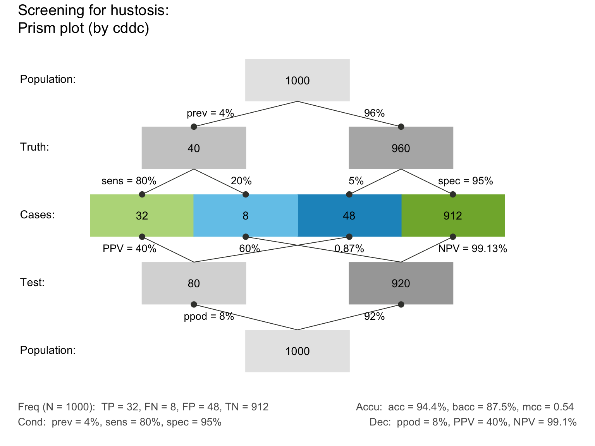

riskyr creates a scenario of class "riskyr",
which can be visualized by the plot method plot.riskyr
and summarized by the summary method summary.riskyr.
riskyr( scen_lbl = txt$scen_lbl, popu_lbl = txt$popu_lbl, N_lbl = txt$N_lbl, cond_lbl = txt$cond_lbl, cond_true_lbl = txt$cond_true_lbl, cond_false_lbl = txt$cond_false_lbl, dec_lbl = txt$dec_lbl, dec_pos_lbl = txt$dec_pos_lbl, dec_neg_lbl = txt$dec_neg_lbl, acc_lbl = txt$acc_lbl, dec_cor_lbl = txt$dec_cor_lbl, dec_err_lbl = txt$dec_err_lbl, sdt_lbl = txt$sdt_lbl, hi_lbl = txt$hi_lbl, mi_lbl = txt$mi_lbl, fa_lbl = txt$fa_lbl, cr_lbl = txt$cr_lbl, prev = NA, sens = NA, spec = NA, fart = NA, N = NA, hi = NA, mi = NA, fa = NA, cr = NA, scen_lng = txt$scen_lng, scen_txt = txt$scen_txt, scen_src = txt$scen_src, scen_apa = txt$scen_apa )
Arguments
| scen_lbl | The current scenario title (sometimes in Title Caps). |
|---|---|
| popu_lbl | A brief description of the current population or sample. |
| N_lbl | A label for the current population |
| cond_lbl | A label for the condition or feature (e.g., some disease) currently considered. |
| cond_true_lbl | A label for the presence of the current condition
or |
| cond_false_lbl | A label for the absence of the current condition
or |
| dec_lbl | A label for the decision or judgment (e.g., some diagnostic test) currently made. |
| dec_pos_lbl | A label for positive decisions
or |
| dec_neg_lbl | A label for negative decisions
or |
| acc_lbl | A label for accuracy (i.e., correspondence between condition and decision or judgment). |
| dec_cor_lbl | A label for correct (or accurate) decisions or judgments. |
| dec_err_lbl | A label for incorrect (or erroneous) decisions or judgments. |
| sdt_lbl | A label for the combination of condition and decision currently made. |
| hi_lbl | A label for hits or true positives |
| mi_lbl | A label for misses or false negatives |
| fa_lbl | A label for false alarms or false positives |
| cr_lbl | A label for correct rejections or true negatives Essential probabilities: |
| prev | The condition's prevalence |
| sens | The decision's sensitivity |
| spec | The decision's specificity value |
| fart | The decision's false alarm rate Essential frequencies: |
| N | The number of individuals in the scenario's population.
A suitable value of |
| hi | The number of hits |
| mi | The number of misses |
| fa | The number of false alarms |
| cr | The number of correct rejections Details and source information: |
| scen_lng | Language of the current scenario (as character code).
Options: |
| scen_txt | A longer text description of the current scenario (which may extend over several lines). |
| scen_src | Source information for the current scenario. |
| scen_apa | Source information for the current scenario according to the American Psychological Association (APA style). |
Format
An object of class "riskyr" with textual and numeric information describing a risk-related scenario.
Value
An object of class "riskyr" describing a risk-related scenario.
Scenario-specific titles and text labels (see txt).
Details
Beyond basic scenario information (i.e., text elements describing a scenario)
only the population size N and the essential probabilities
prev, sens, spec, and fart
are used and returned.
Note:
Basic text information and some numeric parameters (see
numandinit_num) are integral parts of ariskyrscenario.By contrast, basic color information (see
palandinit_pal) is not an integral part, but independently defined.The names of probabilities (see
prob) are currently not an integral part oftxtandriskyrscenarios (but defined inprob_lbl_defandlabel_prob).
See also
init_num and num for basic numeric parameters;
init_txt and txt for current text settings;
init_pal and pal for current color settings.
Other riskyr scenario functions:
plot.riskyr(),
read_popu(),
summary.riskyr()
Other functions initializing scenario information:
init_num(),
init_pal(),
init_txt()
Examples
# Defining scenarios: ----- # (a) minimal information: hustosis <- riskyr(scen_lbl = "Screening for hustosis", N = 1000, prev = .04, sens = .80, spec = .95) # (2) detailed information: scen_reoffend <- riskyr(scen_lbl = "Identify reoffenders", cond_lbl = "being a reoffender", popu_lbl = "Prisoners", cond_true_lbl = "has reoffended", cond_false_lbl = "has not reoffended", dec_lbl = "test result", dec_pos_lbl = "will reoffend", dec_neg_lbl = "will not reoffend", sdt_lbl = "combination", hi_lbl = "reoffender found", mi_lbl = "reoffender missed", fa_lbl = "false accusation", cr_lbl = "correct release", prev = .45, # prevalence of being a reoffender. sens = .98, spec = .46, fart = NA, # (provide 1 of 2) N = 753, scen_src = "Example scenario") # Using scenarios: ----- summary(hustosis)#> Scenario: Screening for hustosis #> #> Condition: Truth #> Decision: Test #> Population: Population #> N = 1000 #> Source: Source information #> #> Probabilities: #> #> Essential probabilities: #> prev sens mirt spec fart #> 0.04 0.80 0.20 0.95 0.05 #> #> Other probabilities: #> ppod PPV NPV FDR FOR acc #> 0.080 0.400 0.991 0.600 0.009 0.944 #> #> Frequencies: #> #> by conditions: #> cond_true cond_false #> 40 960 #> #> by decision: #> dec_pos dec_neg #> 80 920 #> #> by correspondence (of decision to condition): #> dec_cor dec_err #> 944 56 #> #> 4 essential (SDT) frequencies: #> hi mi fa cr #> 32 8 48 912 #> #> Accuracy: #> #> acc: #> 0.944#> Scenario: Identify reoffenders #> #> Condition: being a reoffender #> Decision: test result #> Population: Prisoners #> N = 753 #> Source: Example scenario #> #> Probabilities: #> #> Essential probabilities: #> prev sens mirt spec fart #> 0.45 0.98 0.02 0.46 0.54 #> #> Other probabilities: #> ppod PPV NPV FDR FOR acc #> 0.738 0.598 0.966 0.402 0.034 0.694 #> #> Frequencies: #> #> by conditions: #> cond_true cond_false #> 339 414 #> #> by decision: #> dec_pos dec_neg #> 556 197 #> #> by correspondence (of decision to condition): #> dec_cor dec_err #> 522 231 #> #> 4 essential (SDT) frequencies: #> hi mi fa cr #> 332 7 224 190 #> #> Accuracy: #> #> acc: #> 0.694# 2 ways of defining the same scenario: ----- s1 <- riskyr(prev = .5, sens = .5, spec = .5, N = 100) # s1: define by 3 prob & N s2 <- riskyr(hi = 25, mi = 25, fa = 25, cr = 25) # s2: same scenario by 4 freq all.equal(s1, s2) # should be TRUE#> [1] TRUE# Ways to work: ----- riskyr(prev = .5, sens = .5, spec = .5, hi = 25, mi = 25, fa = 25, cr = 25) # works (consistent)#> $scen_lbl #> [1] "Scenario" #> #> $popu_lbl #> [1] "Population" #> #> $N_lbl #> [1] "N" #> #> $cond_lbl #> [1] "Truth" #> #> $cond_true_lbl #> [1] "True" #> #> $cond_false_lbl #> [1] "False" #> #> $dec_lbl #> [1] "Test" #> #> $dec_pos_lbl #> [1] "Positive" #> #> $dec_neg_lbl #> [1] "Negative" #> #> $acc_lbl #> [1] "Accuracy" #> #> $dec_cor_lbl #> [1] "Correct" #> #> $dec_err_lbl #> [1] "Incorrect" #> #> $sdt_lbl #> [1] "Cases" #> #> $hi_lbl #> [1] "TP" #> #> $mi_lbl #> [1] "FN" #> #> $fa_lbl #> [1] "FP" #> #> $cr_lbl #> [1] "TN" #> #> $prev #> [1] 0.5 #> #> $sens #> [1] 0.5 #> #> $spec #> [1] 0.5 #> #> $fart #> [1] 0.5 #> #> $N #> [1] 100 #> #> $hi #> [1] 25 #> #> $mi #> [1] 25 #> #> $fa #> [1] 25 #> #> $cr #> [1] 25 #> #> $scen_lng #> [1] "en/de" #> #> $scen_txt #> [1] "Description of the current scenario in a short paragraph of text. This description may include several sentences." #> #> $scen_src #> [1] "Source information" #> #> $scen_apa #> [1] "Source information in APA format" #> #> attr(,"class") #> [1] "riskyr"riskyr(prev = .5, sens = .5, spec = .5, hi = 25, mi = 25, fa = 25) # works (ignores freq)#> $scen_lbl #> [1] "Scenario" #> #> $popu_lbl #> [1] "Population" #> #> $N_lbl #> [1] "N" #> #> $cond_lbl #> [1] "Truth" #> #> $cond_true_lbl #> [1] "True" #> #> $cond_false_lbl #> [1] "False" #> #> $dec_lbl #> [1] "Test" #> #> $dec_pos_lbl #> [1] "Positive" #> #> $dec_neg_lbl #> [1] "Negative" #> #> $acc_lbl #> [1] "Accuracy" #> #> $dec_cor_lbl #> [1] "Correct" #> #> $dec_err_lbl #> [1] "Incorrect" #> #> $sdt_lbl #> [1] "Cases" #> #> $hi_lbl #> [1] "TP" #> #> $mi_lbl #> [1] "FN" #> #> $fa_lbl #> [1] "FP" #> #> $cr_lbl #> [1] "TN" #> #> $prev #> [1] 0.5 #> #> $sens #> [1] 0.5 #> #> $spec #> [1] 0.5 #> #> $fart #> [1] 0.5 #> #> $N #> [1] 10 #> #> $hi #> [1] 2 #> #> $mi #> [1] 3 #> #> $fa #> [1] 3 #> #> $cr #> [1] 2 #> #> $scen_lng #> [1] "en/de" #> #> $scen_txt #> [1] "Description of the current scenario in a short paragraph of text. This description may include several sentences." #> #> $scen_src #> [1] "Source information" #> #> $scen_apa #> [1] "Source information in APA format" #> #> attr(,"class") #> [1] "riskyr"## Watch out for: # riskyr(hi = 25, mi = 25, fa = 25, cr = 25, N = 101) # warns, uses actual sum of freq # riskyr(prev = .4, sens = .5, spec = .5, hi = 25, mi = 25, fa = 25, cr = 25) # warns, uses freq